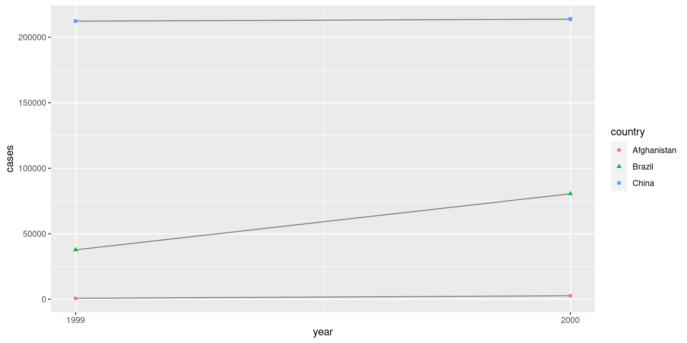
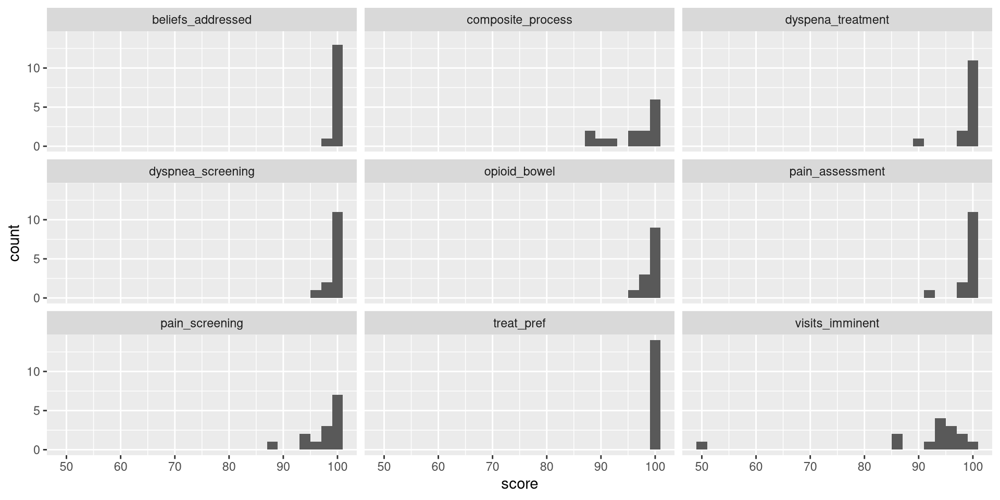
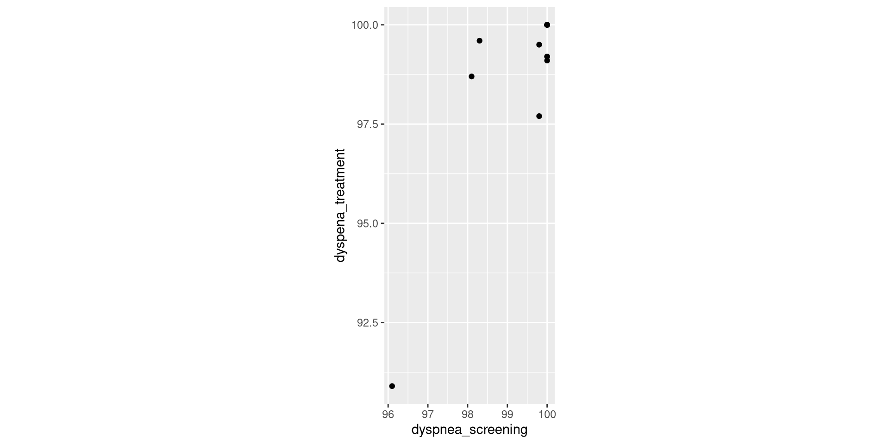

6 - Data tidying
Introdução à ciência de dados
6.1 Introdução
Todas as famílias felizes são iguais. Cada família infeliz é infeliz do seu próprio jeito.
– Leo Tolstoy
Datasets tidys são todos iguais, mas datasets bagunçados são bagunçados cada um à sua maneira.
– Hadley Wickham
Neste capítulo vamos
- Aprender sobre Tidy data
- Forma consistente de organizar os dados em R
- Mais rápidos e fluidos de se trabalhar no tidyverse
- Você pode se focar em responder as perguntas ao invés de brigar com os dados em diferentes representações
Neste capítulo vamos
- Seguir o seguinte Plano de voo
- Vamos começar com a definição de tidy data
- Aplicar a definição em um dataset simples como exemplo
- Concentrar na principal ferramenta de “tidying”: pivotagem
- Pivotagem permite alterar a forma dos dados sem alterar os valores
- Finalizaremos falando sobre “untidy data” que pode ser útil e como criá-la
Prerequisitos:
6.2 Tidy data
Tabelas de tuberculose
- Podemos representar o mesmo conjunto de dados de múltiplas maneiras.
- As tabelas a seguir mostram os mesmos dados de quatro formas
- Cada dataset tem as mesmas quatro variáveis:
- country
- year
- population
- cases
- Uma delas é muito mais fácil de utilizar no tidyverse
table1
#> # A tibble: 6 × 4
#> country year cases population
#> <chr> <dbl> <dbl> <dbl>
#> 1 Afghanistan 1999 745 19987071
#> 2 Afghanistan 2000 2666 20595360
#> 3 Brazil 1999 37737 172006362
#> 4 Brazil 2000 80488 174504898
#> 5 China 1999 212258 1272915272
#> 6 China 2000 213766 1280428583table2
#> # A tibble: 12 × 4
#> country year type count
#> <chr> <dbl> <chr> <dbl>
#> 1 Afghanistan 1999 cases 745
#> 2 Afghanistan 1999 population 19987071
#> 3 Afghanistan 2000 cases 2666
#> 4 Afghanistan 2000 population 20595360
#> 5 Brazil 1999 cases 37737
#> 6 Brazil 1999 population 172006362
#> # … with 6 more rowstable3
#> # A tibble: 6 × 3
#> country year rate
#> <chr> <dbl> <chr>
#> 1 Afghanistan 1999 745/19987071
#> 2 Afghanistan 2000 2666/20595360
#> 3 Brazil 1999 37737/172006362
#> 4 Brazil 2000 80488/174504898
#> 5 China 1999 212258/1272915272
#> 6 China 2000 213766/1280428583table4a # cases
#> # A tibble: 3 × 3
#> country `1999` `2000`
#> <chr> <dbl> <dbl>
#> 1 Afghanistan 745 2666
#> 2 Brazil 37737 80488
#> 3 China 212258 213766
table4b # population
#> # A tibble: 3 × 3
#> country `1999` `2000`
#> <chr> <dbl> <dbl>
#> 1 Afghanistan 19987071 20595360
#> 2 Brazil 172006362 174504898
#> 3 China 1272915272 12804285833 regras de datasets tidy
- Cada variável é uma coluna; cada coluna é uma variável.
- Cada observação é uma linha; cada linha é uma observação
- Cada valor é uma célula; cada célula é um único valor.
Representação visual das regras:

Por que deixar os dados tidy?
Se você tem uma estrutura consistente é mais fácil aprender e utilizar as ferramentas para mexer com essa estrutura por ser uniforme
Colocar variáveis nas colunas é vantajoso em R porque a maior parte das suas funções trabalha com vetores de valores (colunas), então esse formato é bem natural
Facilidade de trabalhar com a table1
- Vamos calcular a taxa de tuberculose por 10,000 habitantes em cada país e chamar de
rate
table1 |>
mutate(
rate = cases / population * 10000
)
#> # A tibble: 6 × 5
#> country year cases population rate
#> <chr> <dbl> <dbl> <dbl> <dbl>
#> 1 Afghanistan 1999 745 19987071 0.373
#> 2 Afghanistan 2000 2666 20595360 1.29
#> 3 Brazil 1999 37737 172006362 2.19
#> 4 Brazil 2000 80488 174504898 4.61
#> 5 China 1999 212258 1272915272 1.67
#> 6 China 2000 213766 1280428583 1.67- Se quisermos os casos por ano:
E se quisermos visualizar a mudança ao longo do tempo:
6.3 Pivotagem
- Os princípios da tidy data parecem tão obvios, será que na vida real você vai encontrar algum dataset que não seja tidy?
- Infelizmente a maior parte dos dados no mundo real é untidy por duas razões:
- Dados normalmente são organizados para facilitar outros objetivos ao invés de análises. Entrada de dados por exemplo, funcionamento de um sistema.
- A maioria das pessoas não está familiarizada com esse princípio, e é difícil chegar nele sozinho sem passar muito tempo trabalhando com dados.
Portanto, a maior parte das análises reais vão envolver pelo menos um pouco de tidying
Iniciamos descobrindo quais são as variáveis e observações
- As vezes isso é fácil
- outras, só perguntando pros autores dos dados
Em seguida vamos pivotar os dados no formato tidy
tidyr oferece duas funções para pivotar os dados:
pivot_longer()que aumenta as linhas e reduz as colunaspivot_wider()que aumenta as colunas e reduz as linhas- Vamos ver uma série de exemplos para pegar o jeito!
6.3.1 Dados nos nomes de colunas
- O dataset
billboardregistra a classificação das músicas 100 músicas mais ouvidas na billboard no ano 2000
billboard
#> # A tibble: 317 × 79
#> artist track date.ent…¹ wk1 wk2 wk3 wk4 wk5 wk6 wk7 wk8
#> <chr> <chr> <date> <dbl> <dbl> <dbl> <dbl> <dbl> <dbl> <dbl> <dbl>
#> 1 2 Pac Baby… 2000-02-26 87 82 72 77 87 94 99 NA
#> 2 2Ge+her The … 2000-09-02 91 87 92 NA NA NA NA NA
#> 3 3 Doors D… Kryp… 2000-04-08 81 70 68 67 66 57 54 53
#> 4 3 Doors D… Loser 2000-10-21 76 76 72 69 67 65 55 59
#> 5 504 Boyz Wobb… 2000-04-15 57 34 25 17 17 31 36 49
#> 6 98^0 Give… 2000-08-19 51 39 34 26 26 19 2 2
#> # … with 311 more rows, 68 more variables: wk9 <dbl>, wk10 <dbl>,
#> # wk11 <dbl>, wk12 <dbl>, wk13 <dbl>, wk14 <dbl>, wk15 <dbl>, wk16 <dbl>,
#> # wk17 <dbl>, wk18 <dbl>, wk19 <dbl>, wk20 <dbl>, wk21 <dbl>, wk22 <dbl>,
#> # wk23 <dbl>, wk24 <dbl>, wk25 <dbl>, wk26 <dbl>, wk27 <dbl>, wk28 <dbl>,
#> # wk29 <dbl>, wk30 <dbl>, wk31 <dbl>, wk32 <dbl>, wk33 <dbl>, wk34 <dbl>,
#> # wk35 <dbl>, wk36 <dbl>, wk37 <dbl>, wk38 <dbl>, wk39 <dbl>, wk40 <dbl>,
#> # wk41 <dbl>, wk42 <dbl>, wk43 <dbl>, wk44 <dbl>, wk45 <dbl>, …- No
billboard, cada observação é uma música - As primeiras três colunas descrevem a música:
artist,track,data.entered
- As próximas 76 (wk1-wk76) descrevem a posição daquela música no rank em cada semana
- Aqui o nome das colunas é uma variável (a semana) e o valor da célula é outro valor (posição no ranking)
- Para pivotar o
billboardvamos usar opivot_longer()com três argumentos:colsespecifica quais colunas vão ser pivotadas- selecionamos as colunas que não são variáveis
- podemos usar
starts_with()e!c(tal, tal, tal)
names_tonomeia as variáveis que estavam nas colunas- nesse caso é
"week"
- nesse caso é
values_tonomeia a variável armazenada nas células"rank"
- Na prática temos a seguinte chamada. O que podem observar no resultado?
#> # A tibble: 24,092 × 5
#> artist track date.entered week rank
#> <chr> <chr> <date> <chr> <dbl>
#> 1 2 Pac Baby Don't Cry (Keep... 2000-02-26 wk1 87
#> 2 2 Pac Baby Don't Cry (Keep... 2000-02-26 wk2 82
#> 3 2 Pac Baby Don't Cry (Keep... 2000-02-26 wk3 72
#> 4 2 Pac Baby Don't Cry (Keep... 2000-02-26 wk4 77
#> 5 2 Pac Baby Don't Cry (Keep... 2000-02-26 wk5 87
#> 6 2 Pac Baby Don't Cry (Keep... 2000-02-26 wk6 94
#> 7 2 Pac Baby Don't Cry (Keep... 2000-02-26 wk7 99
#> 8 2 Pac Baby Don't Cry (Keep... 2000-02-26 wk8 NA
#> 9 2 Pac Baby Don't Cry (Keep... 2000-02-26 wk9 NA
#> 10 2 Pac Baby Don't Cry (Keep... 2000-02-26 wk10 NA
#> # … with 24,082 more rows- O que acontece se uma música não esteve no rakning durante as 76 semanas?
- vemos nos resultados que essas entradas ficam com NA (Not available)
- Mas nesse caso, nós TEMOS o dado que essa música não esteve em posição nenhuma do ranking
- Logo, vamos remover:
- Também podemos melhorar os valores das semanas colocando apenas números:
- wk1, wk2, … -> 1, 2
- Para isso vamos usar o
mutate()e a funçãoreadr::parse_number()- essa função extrai o primeiro número de uma string
billboard_tidy <- billboard |>
pivot_longer(
cols = starts_with("wk"),
names_to = "week",
values_to = "rank",
values_drop_na = TRUE
) |>
mutate(
week = parse_number(week)
)
billboard_tidy# A tibble: 5,307 × 5
artist track date.entered week rank
<chr> <chr> <date> <dbl> <dbl>
1 2 Pac Baby Don't Cry (Keep... 2000-02-26 1 87
2 2 Pac Baby Don't Cry (Keep... 2000-02-26 2 82
3 2 Pac Baby Don't Cry (Keep... 2000-02-26 3 72
4 2 Pac Baby Don't Cry (Keep... 2000-02-26 4 77
5 2 Pac Baby Don't Cry (Keep... 2000-02-26 5 87
6 2 Pac Baby Don't Cry (Keep... 2000-02-26 6 94
7 2 Pac Baby Don't Cry (Keep... 2000-02-26 7 99
8 2Ge+her The Hardest Part Of ... 2000-09-02 1 91
9 2Ge+her The Hardest Part Of ... 2000-09-02 2 87
10 2Ge+her The Hardest Part Of ... 2000-09-02 3 92
# … with 5,297 more rows- Agora é fácil de vermos como as músicas variaram no ranking ao longo do tempo!
6.3.2 Como a pivotagem funciona?
Agora que você viu o que dá pra fazer com a pivotagem, vamos pegar a intuição do que ela faz com os dados
Iniciando com um exemplo simples:
- Vamos considerar que temos três variáveis:
varos valores já na coluna varnameos nomes da colunasvalueos valores da célula
- Nesse caso, como podemos arrumar (tidy)?
df |>
pivot_longer(
cols = col1:col2,
names_to = "name",
values_to = "values"
)
#> # A tibble: 6 × 3
#> var name values
#> <chr> <chr> <dbl>
#> 1 A col1 1
#> 2 A col2 2
#> 3 B col1 3
#> 4 B col2 4
#> 5 C col1 5
#> 6 C col2 6- Como essa transformação aconteceu? Vamos por partes!
- Colunas que já são variáveis (var) são repetidas para cada valor das variáveis em colunas (col1 e col2):

- Nomes de colunas (col1, col2) que viram valores de uma nova variável (name) se repetem para uma vez para cada linha do dataset original.
names_to = "name".

Os valores das colunas que viraram valores vão para uma nova variável (value). values_to = "values"

6.3.3 Muitas variáveis nos nomes de colunas
- Fica um pouco mais complicado quando temos múltiplas variáveis nos nomes de colunas
Vejamos o dataset who2
Esse dataset registra os dados sobre tuberculose coletados pela WHO - World Health Organization
Duas colunas são bem claras:
countryeyearE as outras? Queria que vocês tentassem descobrir juntos:
- Temos 56 colunas como
sp_m_014,ep_m_4554, erel_m_3544 - Se você ficar encarando elas vai notar alguns padrões:
- O nome de cada coluna é composto por três partes separadas por: “_”
- A primeira parte descreve o método de diagnóstico: sp/rel/ed
- A segunda parte é o gênero: m/f
- A terceira parte é a faixa de idade: 014/1524/2535/3544/4542/65
- Assim, temos seis variáveis:
- duas já nas colunas
countryeyear - três contidas nos nomes de colunas
- e mais uma nos valores dessas colunas
- duas já nas colunas
- Portanto nosso
pivot_longer()vai ter as seguintes mudanças:names_tovai receber um vetor com os nomes de colunasnames_sepvai informar qual o separador dos nomes das colunas- Poderíamos usar o
names_patternpara usar uma expressão regular mais complexa caso alguém tenha curiosidade vale ir atrás.
who2 |>
pivot_longer(
cols = !(country:year),
names_to = c("diagnosis", "gender", "age"),
names_sep = "_",
values_to = "count"
)#> # A tibble: 405,440 × 6
#> country year diagnosis gender age count
#> <chr> <dbl> <chr> <chr> <chr> <dbl>
#> 1 Afghanistan 1980 sp m 014 NA
#> 2 Afghanistan 1980 sp m 1524 NA
#> 3 Afghanistan 1980 sp m 2534 NA
#> 4 Afghanistan 1980 sp m 3544 NA
#> 5 Afghanistan 1980 sp m 4554 NA
#> 6 Afghanistan 1980 sp m 5564 NA
#> # … with 405,434 more rows- Pivotar com multiplas variáveis nos nomes de coluna significa que cada nome agora preenche valores em múltiplas colunas do output:

6.3.4 Dados e nomes de variáveis no cabeçalho de colunas
- O próximo passo de complexidade é quando os nomes de colunas incluem misturas de nomes e valores de variáveis
Vamos ver o dataset household
household
#> # A tibble: 5 × 5
#> family dob_child1 dob_child2 name_child1 name_child2
#> <int> <date> <date> <chr> <chr>
#> 1 1 1998-11-26 2000-01-29 Susan Jose
#> 2 2 1996-06-22 NA Mark <NA>
#> 3 3 2002-07-11 2004-04-05 Sam Seth
#> 4 4 2004-10-10 2009-08-27 Craig Khai
#> 5 5 2000-12-05 2005-02-28 Parker Gracie- Tem os dados de cinco famílias
- Nomes, datas de nascimento de até duas crianças
- O desafio é que os nomes das colunas contém duas variáveis (
dob,name) e o valor de outra variável (childcom valores 1 e 2)
Para arrumar o household
- passar um vetor dos nomes de colunas para o
names_to - Dessa vez vamos usar o valor especial
.valuepara usar o primeiro componente do nome da coluna como o nome da variável no output - Usamos novamente o
values_drop_na = TRUEremover as colunas com falsos NA (casais com um filho não tem um segundo ‘não disponível’) parse_numberpara converterchild1em 1
- Pivotar com
names_to = c(".values", "id")separa os nomes das colunas em dois componentes:- o primeiro determina o output do nome da coluna (
xouy) - o segundo determina o valor de
id
- o primeiro determina o output do nome da coluna (

6.3.5 Horizontalizando os dados
- vimos o
pivot_longerpara datasets com valores nas colunas - vemos usar o
pivot_wilderquando uma observação está espalhada por múltiplas linhas - Esses casos são mais comuns em dados governamentais
Vamos começar com o cms_patient_experience
- Dataset do Centers of Medicare and Medicaid sobre a experiência de pacientes
cms_patient_experience
#> # A tibble: 500 × 5
#> org_pac_id org_nm measure_cd measure_title prf_r…¹
#> <chr> <chr> <chr> <chr> <dbl>
#> 1 0446157747 USC CARE MEDICAL GROUP INC CAHPS_GRP_1 CAHPS for MIPS … 63
#> 2 0446157747 USC CARE MEDICAL GROUP INC CAHPS_GRP_2 CAHPS for MIPS … 87
#> 3 0446157747 USC CARE MEDICAL GROUP INC CAHPS_GRP_3 CAHPS for MIPS … 86
#> 4 0446157747 USC CARE MEDICAL GROUP INC CAHPS_GRP_5 CAHPS for MIPS … 57
#> 5 0446157747 USC CARE MEDICAL GROUP INC CAHPS_GRP_8 CAHPS for MIPS … 85
#> 6 0446157747 USC CARE MEDICAL GROUP INC CAHPS_GRP_12 CAHPS for MIPS … 24
#> # … with 494 more rows, and abbreviated variable name ¹prf_rate- Cada observação é uma organização
- Mas cada organização está espalhada em seis linhas
- em cada linha tem uma variável ou medida
- Podemos ver os valores para
measure_cdemeasure_titleusando odistict()
cms_patient_experience |>
distinct(measure_cd, measure_title)
#> # A tibble: 6 × 2
#> measure_cd measure_title
#> <chr> <chr>
#> 1 CAHPS_GRP_1 CAHPS for MIPS SSM: Getting Timely Care, Appointments, and In…
#> 2 CAHPS_GRP_2 CAHPS for MIPS SSM: How Well Providers Communicate
#> 3 CAHPS_GRP_3 CAHPS for MIPS SSM: Patient's Rating of Provider
#> 4 CAHPS_GRP_5 CAHPS for MIPS SSM: Health Promotion and Education
#> 5 CAHPS_GRP_8 CAHPS for MIPS SSM: Courteous and Helpful Office Staff
#> 6 CAHPS_GRP_12 CAHPS for MIPS SSM: Stewardship of Patient Resources- Nenhuma dessas colunas tem um bom nome de variável
measure_cdnão dá nenhuma dica sobre a variávelmeasure_titleé uma frase longa com espaços
- Vamos usar a
measure_cdpor enquanto, mas numa análise de verdade seria bom pensar num nome curto e significativo pra cada variável
pivot_wider()é o oposto dopivot_longer(), nesse caso vamos passar:- as colunas existentes que definem valores
values_from - os nomes das colunas
names_from()
- as colunas existentes que definem valores
#> # A tibble: 500 × 9
#> org_pac_id org_nm measu…¹ CAHPS…² CAHPS…³ CAHPS…⁴ CAHPS…⁵ CAHPS…⁶ CAHPS…⁷
#> <chr> <chr> <chr> <dbl> <dbl> <dbl> <dbl> <dbl> <dbl>
#> 1 0446157747 USC CAR… CAHPS … 63 NA NA NA NA NA
#> 2 0446157747 USC CAR… CAHPS … NA 87 NA NA NA NA
#> 3 0446157747 USC CAR… CAHPS … NA NA 86 NA NA NA
#> 4 0446157747 USC CAR… CAHPS … NA NA NA 57 NA NA
#> 5 0446157747 USC CAR… CAHPS … NA NA NA NA 85 NA
#> 6 0446157747 USC CAR… CAHPS … NA NA NA NA NA 24
#> # … with 494 more rows, and abbreviated variable names ¹measure_title,
#> # ²CAHPS_GRP_1, ³CAHPS_GRP_2, ⁴CAHPS_GRP_3, ⁵CAHPS_GRP_5, ⁶CAHPS_GRP_8,
#> # ⁷CAHPS_GRP_12- O que acham desse resultado?
- Ué, esse resultado não parece certo
- ainda temos múltiplas linhas para cada organização
- Isso é porque o
pivot_wider()vai tentar preservar todas as colunas existentesmeasure_titleé mantida e tem seis observações para cada organização
- Para resolver esse problema vamos avisar quais colunas identificam cada linha
#> # A tibble: 95 × 8
#> org_pac_id org_nm CAHPS…¹ CAHPS…² CAHPS…³ CAHPS…⁴ CAHPS…⁵ CAHPS…⁶
#> <chr> <chr> <dbl> <dbl> <dbl> <dbl> <dbl> <dbl>
#> 1 0446157747 USC CARE MEDICA… 63 87 86 57 85 24
#> 2 0446162697 ASSOCIATION OF … 59 85 83 63 88 22
#> 3 0547164295 BEAVER MEDICAL … 49 NA 75 44 73 12
#> 4 0749333730 CAPE PHYSICIANS… 67 84 85 65 82 24
#> 5 0840104360 ALLIANCE PHYSIC… 66 87 87 64 87 28
#> 6 0840109864 REX HOSPITAL INC 73 87 84 67 91 30
#> # … with 89 more rows, and abbreviated variable names ¹CAHPS_GRP_1,
#> # ²CAHPS_GRP_2, ³CAHPS_GRP_3, ⁴CAHPS_GRP_5, ⁵CAHPS_GRP_8, ⁶CAHPS_GRP_12- Agora sim!
6.3.6 Como o pivot_wider() funciona?
- Vamos começar com um exemplo simples
- Conseguem ver o que faz o
pivot_wider()?
Primeiro ele descobre quais vão ser as linhas e colunas
- Os nomes das colunas é fácil, são os valores de
names_from- como podemos vê-los?
- As linhas por padrão são formadas pelas variáveis que não são
names_from, nemvalues_from. Chamamos essas colunas de deid_cols
- O
pivot_wider()combina as linhas e colunas para griar um dataframe vazio:
df |>
select(-name, -value) |>
distinct() |>
mutate(x = NA, y = NA, z = NA)
#> # A tibble: 2 × 4
#> id x y z
#> <chr> <lgl> <lgl> <lgl>
#> 1 A NA NA NA
#> 2 B NA NA NA- Logo em seguida ele é preenchido com as as informações no dataset
- Nesse caso não tem entrada para o id “B” e nome “z”, por isso essa célula continua vazia.
PS
(Se uma linha tiver múltiplas entradas o pivot_wider() vai transformar cada valor do dataset em uma lista e te sugerir analisar se você não quer sumarizar, resolver algum bug ou deixar desse jeito
6.4 Untidy data
- O
pivot_wider()é ocasionalmente útil para deixar dados “arrumadinhos” - Mas ele realmente brilha em deixar dados desarrumados
- Ué?
- Tem muitas estruturas de dados untidy que são extremamente úteis
- Aqui vamos ver dois exemplos de
pivot_wider()deixando datasets úteis para:- dados mais legíveis
- manipular dados pragmaticamente
6.4.1 Apresentando dados para humanos
- Vamos contar os diamantes do dataset
diamondspor cor e clareza
diamonds |>
count(clarity, color)
#> # A tibble: 56 × 3
#> clarity color n
#> <ord> <ord> <int>
#> 1 I1 D 42
#> 2 I1 E 102
#> 3 I1 F 143
#> 4 I1 G 150
#> 5 I1 H 162
#> 6 I1 I 92
#> # … with 50 more rowsdplyr::count()produz tidy data:- bom para futuras manipulações, mas ruim para outros humanos lerem
- Como podemos melhorar?
diamonds |>
count(clarity, color) |>
pivot_wider(
names_from = color,
values_from = n
)
#> # A tibble: 8 × 8
#> clarity D E F G H I J
#> <ord> <int> <int> <int> <int> <int> <int> <int>
#> 1 I1 42 102 143 150 162 92 50
#> 2 SI2 1370 1713 1609 1548 1563 912 479
#> 3 SI1 2083 2426 2131 1976 2275 1424 750
#> 4 VS2 1697 2470 2201 2347 1643 1169 731
#> 5 VS1 705 1281 1364 2148 1169 962 542
#> 6 VVS2 553 991 975 1443 608 365 131
#> # … with 2 more rows6.4.3 Computação pragmática
- As vezes é mais fácil de responder uma pergunta usando dados untidy
- Se quiser por exemplo o total de valores faltantes no
cms_patient_experience - é mais fácil trabalhar com ele untidy:
cms_patient_experience |>
group_by(org_pac_id) |>
summarize(
n_miss = sum(is.na(prf_rate)),
n = n(),
)
#> # A tibble: 95 × 3
#> org_pac_id n_miss n
#> <chr> <int> <int>
#> 1 0446157747 0 6
#> 2 0446162697 0 6
#> 3 0547164295 1 6
#> 4 0749333730 0 6
#> 5 0840104360 0 6
#> 6 0840109864 0 6
#> # … with 89 more rows- repare que definimos tidy como “uma variável por coluna” mas não definimos o que uma variável é
- É uma boa prática ser pramático, e dizer que a variável é o que for facilitar sua análise
- Se estiver travado tentando fazer uma computação, talvez seja uma boa ideia alterar a organização dos seus dados.
- Normalmente computar um número:
- fixo de valores (diferenças e proporções) é mais fácil com dados em colunas
- variável de valores (somas e médias) é mais fácil com dados em linhas
- Não tenha medo de arrumar e desarrumar
Vamos explorar essa ideia com o cms_patient_care
- esse dataset tem uma estrutura similar a
cms_patient_experience
cms_patient_care
#> # A tibble: 252 × 5
#> ccn facility_name measure_abbr score type
#> <chr> <chr> <chr> <dbl> <chr>
#> 1 011500 BAPTIST HOSPICE beliefs_addressed 202 denominator
#> 2 011500 BAPTIST HOSPICE beliefs_addressed 100 observed
#> 3 011500 BAPTIST HOSPICE composite_process 202 denominator
#> 4 011500 BAPTIST HOSPICE composite_process 88.1 observed
#> 5 011500 BAPTIST HOSPICE dyspena_treatment 110 denominator
#> 6 011500 BAPTIST HOSPICE dyspena_treatment 99.1 observed
#> # … with 246 more rows- ele contém informação de 9 medidas:
beliefs_addressed,composite_process,dyspena_treatment…
- sobre 14 diferentes instalações:
- identidicadas por
ccnefacility_name
- identidicadas por
- Cada medida é registrada em duas linhas da coluna
score- quantos pacientes responderam a pergunta (denominator)
- a porcentagem de pacientes que responderam sim (observed)
cms_patient_care
#> # A tibble: 252 × 5
#> ccn facility_name measure_abbr score type
#> <chr> <chr> <chr> <dbl> <chr>
#> 1 011500 BAPTIST HOSPICE beliefs_addressed 202 denominator
#> 2 011500 BAPTIST HOSPICE beliefs_addressed 100 observed
#> 3 011500 BAPTIST HOSPICE composite_process 202 denominator
#> 4 011500 BAPTIST HOSPICE composite_process 88.1 observed
#> 5 011500 BAPTIST HOSPICE dyspena_treatment 110 denominator
#> 6 011500 BAPTIST HOSPICE dyspena_treatment 99.1 observed
#> # … with 246 more rows- Se você quiser computar o número de pacientes que responderam sim para cada pergunta? Como você faria?
- você pode pivotar
typepara a as colunas:
Dessa forma:
cms_patient_care |>
pivot_wider(
names_from = type,
values_from = score
) |>
mutate(
numerator = round(observed / 100 * denominator)
)#> # A tibble: 126 × 6
#> ccn facility_name measure_abbr denominator observed numerator
#> <chr> <chr> <chr> <dbl> <dbl> <dbl>
#> 1 011500 BAPTIST HOSPICE beliefs_addressed 202 100 202
#> 2 011500 BAPTIST HOSPICE composite_process 202 88.1 178
#> 3 011500 BAPTIST HOSPICE dyspena_treatment 110 99.1 109
#> 4 011500 BAPTIST HOSPICE dyspnea_screening 202 100 202
#> 5 011500 BAPTIST HOSPICE opioid_bowel 61 100 61
#> 6 011500 BAPTIST HOSPICE pain_assessment 107 100 107
#> # … with 120 more rowscms_patient_care
#> # A tibble: 252 × 5
#> ccn facility_name measure_abbr score type
#> <chr> <chr> <chr> <dbl> <chr>
#> 1 011500 BAPTIST HOSPICE beliefs_addressed 202 denominator
#> 2 011500 BAPTIST HOSPICE beliefs_addressed 100 observed
#> 3 011500 BAPTIST HOSPICE composite_process 202 denominator
#> 4 011500 BAPTIST HOSPICE composite_process 88.1 observed
#> 5 011500 BAPTIST HOSPICE dyspena_treatment 110 denominator
#> 6 011500 BAPTIST HOSPICE dyspena_treatment 99.1 observed
#> # … with 246 more rows- Se você quiser apresentar a distribuição de cada métrica? Como você faria?
- Poderia deixar quieto sem pivotar, e criar um histograma facetado por
measure_abbr
Dessa forma:

cms_patient_care
#> # A tibble: 252 × 5
#> ccn facility_name measure_abbr score type
#> <chr> <chr> <chr> <dbl> <chr>
#> 1 011500 BAPTIST HOSPICE beliefs_addressed 202 denominator
#> 2 011500 BAPTIST HOSPICE beliefs_addressed 100 observed
#> 3 011500 BAPTIST HOSPICE composite_process 202 denominator
#> 4 011500 BAPTIST HOSPICE composite_process 88.1 observed
#> 5 011500 BAPTIST HOSPICE dyspena_treatment 110 denominator
#> 6 011500 BAPTIST HOSPICE dyspena_treatment 99.1 observed
#> # … with 246 more rows- Se você quiser explorar a relação entre diferentes métricas? Como você faria?
- Você poderia colocar os nomes das métricas nas colunas para compará-las usando scatterplots
Dessa forma:

6.5 Sumário
- Nesse capítulo aprendemos sobre tidy data
- variáveis nas colunas e observações nas linhas
- facilita o trabalho com o tidyverse
- tem o desafio de arrumar dados em formatos diversos
- vimos as funções
pivot_longer()epivot_wider()pra isso - Finalmente, vimos que arrumar não resolve todos os problemas e as vezes desarumar é preciso!
Obrigado!
Dúvidas?